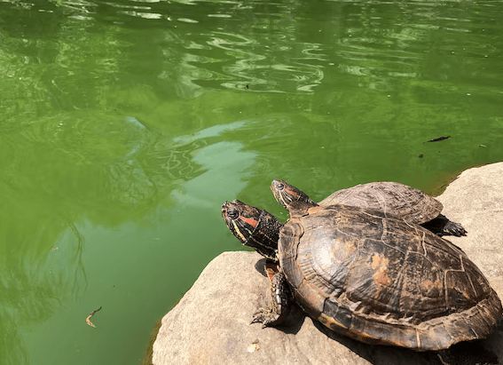
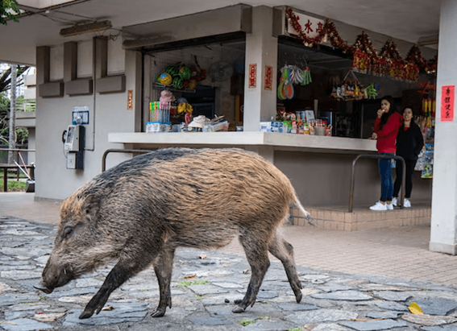

NATIONAL GEOGRAPHIC
You can ski down a dormant volcano in Erciyes, Turkey's best ski destination
TRAVEL
There are only two peaks in the Alps higher than Mount Erciyes Mont Blanc and the Dufourspitze but I hadn’t heard of this mighty Anatolian mountain until I was presented with the opportunity to ski its slopes. At 3,917 metres, it only ranks as Turkey’s fifth-highest mountain, but the dormant volcano lends its name to the country’s largest ski resort and it offers a very different experience to skiing in the Alps.
For starters, there’s the remarkably low cost of a lift pass: 52 TRY (£1.50) per day, or 260 TRY (£7.50) for the week in 2022/23, which is around 2.5% of the price of your average resort in the Alps. And this doesn’t mean inferior ski facilities. Erciyes has 19 modern ski lifts, a mix of generally fast and efficient gondolas and chair lifts, as well as 70 miles of well-groomed slopes (mainly blues and reds), which wind down the lower slopes of Mount Erciyes to provide whatever challenges a novice or intermediate skier could wish for. There are five dedicated beginners’ ski areas, and if you’re looking for more challenging terrain, there’s a small selection of black runs. But the real hidden gem if you’re lucky enough to visit after a good dump of snow is the off-piste terrain. Erciyes’ top lift station sits at 3,400 metres higher than anything in the Alps and from here you can access some seriously steep backcountry, which isn’t well-visited by local skiers, so expect fresh tracks aplenty.
I’m introduced to Erciyes’ upper slopes by ski patroller Gönen Göleli, whose family have skied here since the 1940s (no ski lifts in those days; it was all about schlepping uphill under your own steam). The fast, four-person Ottoman chair deposits us at Erciyes Ski Resort’s high point, where the first thing I do after gulping in as much oxygen as possible in the thin air is check out the magnificent views.

Bearing down from above are the steep, craggy, partially glaciated slopes of Mount Erciyes, an imposing peak first ascended in 1837 by British geologist and Conservative MP WJ Hamilton; it’s a tough climb even today, so it must have been a pretty big adventure 186 years ago.
The mountain’s upper slopes look out across much of central Anatolia, but despite clear blue skies and dazzling sunshine, it’s cold enough to ensure we don’t hang around the frequent strong winds that blast the area making themselves known. We descend on a virtually deserted, long black run, eventually screeching to a halt in Hisarcik Gate, one of four mountain villages that make up Erciyes Ski Resort.
hot airballoons over rocks in Turkey
Thus far, I’m yet to encounter a lift queue in Erciyes that comprised of more than six people quite an accomplishment in February half-term, when Europe’s packed central ski resorts all but guarantee 20-minute waits for ski lifts. And this doesn’t change as we move on to the three lifts required to get to the top of Piste 1.
From here, we descend 1,000 vertical metres over 3.7 miles of perfectly groomed red and black runs, encountering just one snowboarder and three skiers during our headlong descent. When we eventually stop for lunch at the H2650 Cafe & Restaurant (the digits refer to its altitude in metres), traditional and delicious Turkish dishes such as kofte and doner kebab are staples of the menu at a fraction of the price I’d expect to pay at a European mountain restaurant.
Pistes 1 and 1b proved so much fun that Gönen and I make two more descents before eventually skiing back to my hotel at Develi Gate, at the opposite end of the resort a journey that takes around an hour, which gives you some idea of the acreage over which Erciyes extends.
Along the way, I reflect that Erciyes has achieved an appealing balance: big enough to attract adventurous skiers, modern enough to compete with many European ski resorts but offering quieter slopes. And you’re spending considerably less for all this, making Erciyes a must-try mountain.
Comments :
- john Very good
- john Very good
Leave a Reply
Your email address will not be published. Required fields are marked*
Related posts:
-
 Cheeky otters are thriving in Singapore and adapting quickly to big city life
Cheeky otters are thriving in Singapore and adapting quickly to big city lifeSINGAPOREOn a grassy strip along the highway, a blur of brown fur moves quickly, a small head popping up every so often to check for danger. It’s a family of seven otters, likely on their way to their den at the Singapore Botanic Gardens.
View article -
New York City has a turtle problem
NEW YORK CITYBright green and viscous, Morningside Pond looks like a vat of unappealing pea soup. Styrofoam cups and plastic bags cling to the pond’s edge, bound in place by bubbles of green foam.
View article -
Wild boars make a home amid Hong Kong’s high rises and highways
HONG KONGOn a Wednesday morning in one of Hong Kong’s high-end residential areas, a large wild boar napped peacefully on the side of a road. It was seemingly oblivious to the rush hour traffic whizzing past mere feet away
View article